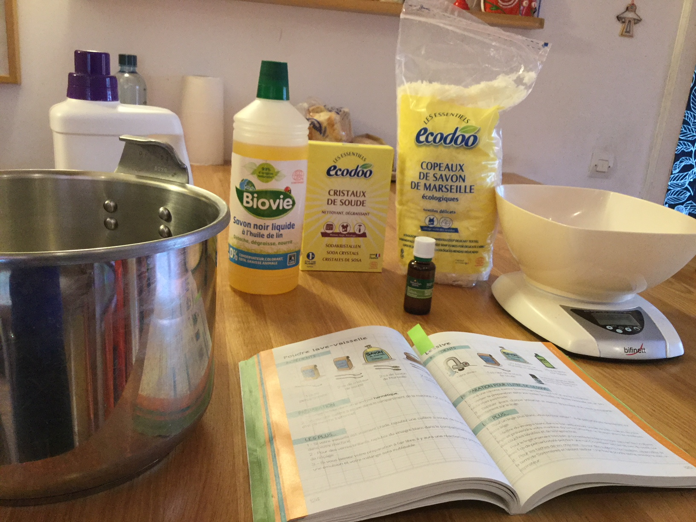
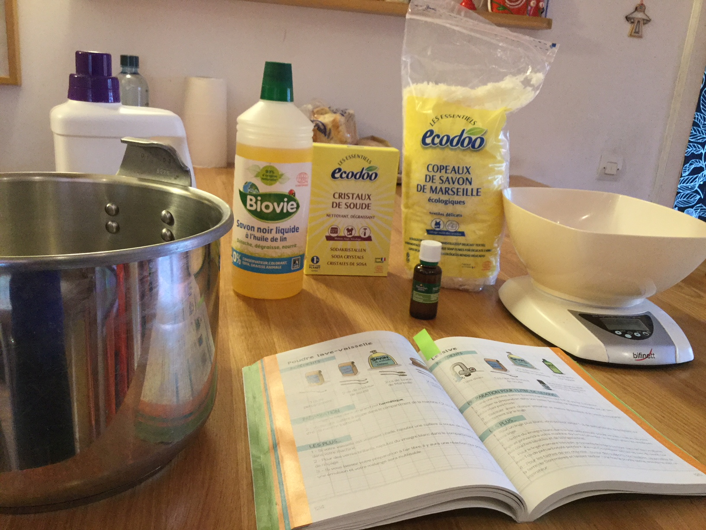

Ménage
 

La lessive
15min
Ingrédients : cristaux de soude, savon de Marseille en paillettes, savon noir liquide, eau.
Dans ma cocotte minute (ou une grosse casserole à fond épais) je verse une cuillère à soupe de cristaux de soude + 20g de savon de Marseille en paillettes + 20g de savon noir liquide et un litre d’eau.
Je porte le tout à ébullition. J’éteins le feu et laisse tiédir. Attention, en refroidissant, ça fige, donc il ne fait pas attendre trop longtemps avant de transvaser dans un bidon de lessive vide.
C’est la recette de la Famille (presque) zéro déchet, mais sans l’huile essentielle, qui n’est là que pour parfumer et coûte cher. Je trouve ça super de se libérer de cette notion de propre = parfum. Ma lessive ne « sent » pas une odeur particulière, mais elle sent le propre quand même ;-) Et quand elle a pu sécher au soleil, c’est encore mieux!
Je mets deux bouchons de mon bidon de lessive pour ma machine de 10kg. À vue d’œil, ça fait dans les trois cuillères à soupe. En revanche, je lave plutôt chaud (40°C la couleur et 60°C le blanc ou le linge de maison, 90°C les serpillères =et un décrassage du calcaire de la machine en même temps, environ une fois par mois).
J’ajoute dans mes machines de blanc une cuillère à soupe de percarbonate de soude, c’est top pour éviter la grisaille.
Je ne mets pas d’assouplissant et ça ne me manque pas. Là aussi, c’est souvent l’odeur que les industriels nous ont « appris » à aimer. Je suis contente de m’en être désintoxiquée il y a déjà longtemps.
Le produit lave-vaisselle
3min
Ingrédients: percarbonate de soude, cristaux de soude, savon de Marseille en paillettes, acide citrique.
Je fais ce produit en petite quantité dans un bocal à large col de 750cl, parce qu’il a tendance à durcir, et quand on est en panne, c’est tellement rapide, que j’en refais sur le champs. C’est la recette intégrale du (supertop) livre « La famille (presque) zéro déchet ».
Dans mon bocal, je verse 4 cuillerées à soupe de percarbonate, puis 8 cuillères à soupe de cristaux de soude, je mélange avec la grande cuillère. J’ajoute 8 cuillères (toujours à soupe) de paillettes de savon de Marseille, je mélange. Et enfin 8 cuillères d’acide citrique et je mélange et je ferme hermétiquement sans perdre de temps.
Pour faire tourner mon lave-vaisselle, je mets une cuillère à soupe de cette poudre dans le compartiment dédié au lavage. Si le mélange s’est durci, je gratouillle un peu avec la cuillère pour le faire revenir en poudre, et ça marche très bien.
Liquide rinçage: alors là, ça fait des années que je fais ça plutôt que d’acheter les produits industriels: je les remplace purement et simplement par du vinaigre d’alcool blanc (je prends celui à 12° d’acidité: déjà essayé avec celui à 8°, c’est moins puissant). C’est bête comme chou et super efficace (et non, ça ne sent pas le vinaigre quand ça sort du lave-vaisselle).
Le C’est magique, on n’a jamais eu une vaisselle qui sortait aussi propre du lave-vaisselle ! Les traces de thé sur les vieilles tasses, les marques de calcaire sur les verres etc: tout a disparu. D’ailleurs c’était l’une des initiatives que craignait le plus Jean-Christophe et qui l’a complètement convaincu, il n’en revenait pas.
Le Assez rapidement, j’ai constaté un dépôt gras sur le filtre et le joint du lave-vaisselle, largement décrit par d’autres utilisateurs sur les réseaux. C’est lié à la présence du savon de Marseille. Je essuie régulièrement le dépôt et je lave le filtre, qui reste un peu graisseux malgré tout. Pour améliorer, j’essaie en ce moment un autre savon de Marseille, sans glycérine (Marius Fabre, pour le citer, qui est l’un des rares à avoir l’appellation savon de Marseille véritable): on verra si c’est mieux. Sinon, j’essayerai peut-être une recette sans savon de Marseille mais pour l’instant le bénéfice me semble de toute façon largement supérieur aux contraintes.
PS: Je n’ai pas parlé du sel, à mettre dans le compartiment ad hoc. Je continue à utiliser le sel régénérant du commerce, tout simplement parce que l’alternative (gros sel) coûte plus cher. Au niveau des déchets, mon sel industriel est emballé dans un carton que je mets au recyclage, en enlevant juste le petit bec verseur en alu. Y a pire.